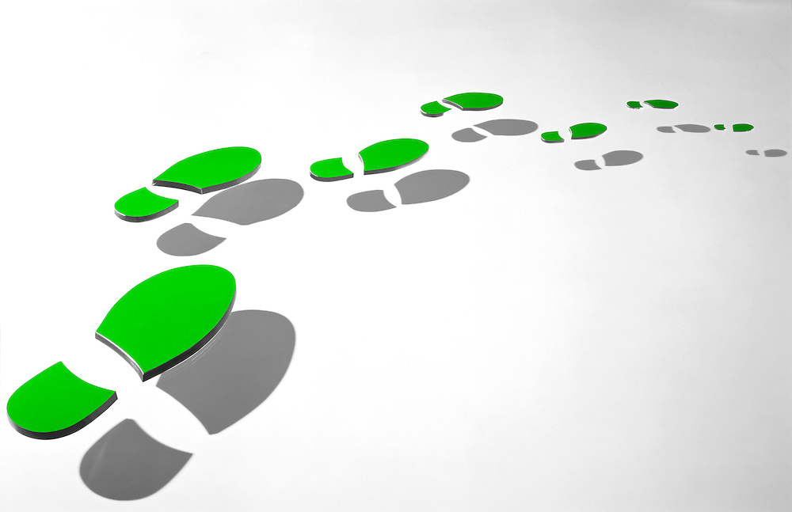
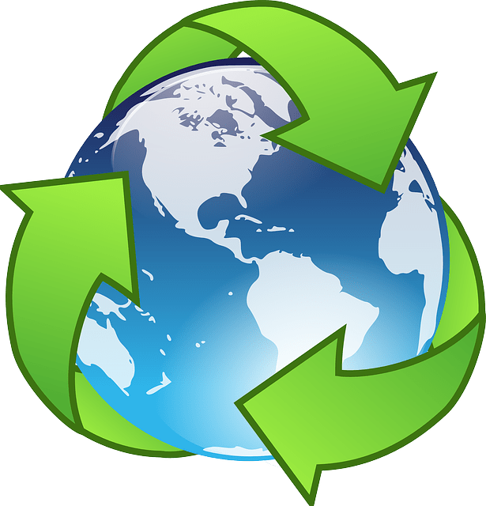

How we manage our waste has improved immensely throughout the past twenty years. It is our belief that by improving the people's awareness of how something small will change Irelands carbon footprint.
About our company:
- Who we are?
Our company was founded in 1999. We aim to educate people about how they can make a difference. Our company was founded as we strongly believe that, education is the way to make people change. This has been very successful throughout the past couple of years. Everyday we get more and more applicants, looking to help us make a difference.
- History
Our team has worked throughout the years by raising awareness to our local community. We visit local schools yearly to educate the children on fun ways to help our planet. We believe children are our future and our hope in creating a greener society. We also visit our local community homes and educated people on how they can make a difference. We investigated easy fun ways to reduce, recuse and recycle. We decided that small steps can create an even bigger step.
- Our aims
Our aim is to create a greener environment we do this through education and competitions.

Frequently Asked Questions
- What do we do?
We help our environment, by picking up rubbish, raising awareness and organising fun competitions for people to get involved in.
- How can you get involved?
Simply follow us on our Social Media, these links can be found at the bottom of the page or on our contact us page. You can message us there letting us know if you are interested or you can go to the contact us page and fill out a form and we will take care of the rest.
- Where can you find more information?
Visit our social media pages to see what we are doing. Our team regularly updates our social media to promote awareness and spread how you can also help make our world a greener place.